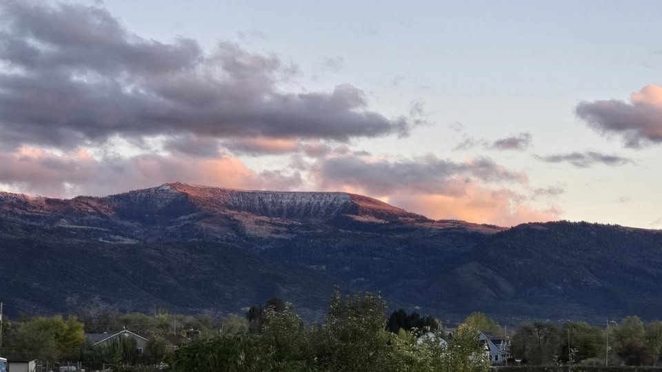

Good Food Good People A Higher Purpose
A place to gather, refuel, and remember what really matters.
Our Story
Prototype 001 placeholder — the full story is coming.
Jesus Mountain Restaurant is centered on a home kitchen in Spring City, Utah, beneath Horseshoe Mountain — the mountain Greg calls Jesus Mountain. It grows out of decades of family meals, hospitality, and memory, and it is part of My Jesus-Greg WORLD: an invitation to reconsider ordinary meals, kitchens, and family gatherings as potentially extraordinary experiences — because feeding people can be a sacred act.
Gallery
Prototype 001 placeholder — photographs are coming.
Real photographs of the mountain, the kitchen, and the table will live here. The four tile photographs on this homepage are temporary placeholders taken from the approved design mockup; the mountain hero photograph and the logo above are the real, supplied artwork.
Jesus TV
Prototype 001 placeholder — this doorway is coming.
Jesus TV is Greg’s way of looking twice at an ordinary scene — a kitchen table, a church door, a familiar street — and asking what else it might mean if Jesus is present in it. A future page will open that part of My Jesus-Greg WORLD from here.
Contact
Prototype 001 placeholder — contact details are coming.
Jesus Mountain Restaurant is in Spring City, Utah. It is not yet presented as a conventional public restaurant, so no address, hours, ordering, or reservations are listed here. Contact information will be added when Greg is ready to publish it.